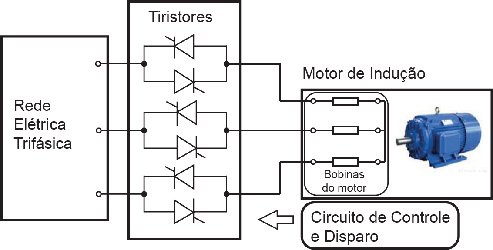

O soft-starter é um dispositivo eletrônico formado por seis tiristores, sendo utilizado para a partida de motores
de indução em gaiola. O diagrama a seguir ilustra uma aplicação desse dispositivo.

Considerando o diagrama acima e os princípios de funcionamento de uma máquina de indução, avalie as
afirmações a seguir.
-
A finalidade principal do soft-starter é reduzir a corrente de partida em motores de indução em gaiola.
-
A configuração do diagrama permite utilizar o soft-starter para realizar a frenagem do motor de indução.
-
O soft-starter também pode ser utilizado para controlar a velocidade do motor de indução em gaiola
para aplicações em servomecanismos.
-
Para realizar a partida suave do motor, o soft-starter varia a frequência da tensão aplicada ao motor,
iniciando em 0 Hz (máquina parada) e aumentando gradativamente até atingir a frequência nominal.
É correto apenas o que se afirma em
-
I e II.
-
I e III.
-
III e IV.
-
I, II e IV.
-
II, III e IV.